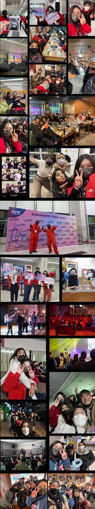

2022
SIGGRAPH Asia 2022 대구 · 학생 봉사자
대구에서 열린 SIGGRAPH Asia 2022에서 처음 학회의 뒤편을 경험했고, ‘다음엔 발표자로 서겠다’는 목표가 생겼습니다.

SIGGRAPH Asia 2022에 학생 봉사자로 선발되어 세션 운영, 참가자 안내, 홍보, 현장 관리를 맡았습니다.
오징어게임 마스코트 복장으로 행사를 홍보했고, 프린터 문제로 곤란해하던 외국인 참가자를 위해 업체에 직접 연락해 끝까지 해결을 도왔습니다. 시상식 날에는 티켓이 없던 교수님이 상을 받는 제자를 축하할 수 있도록 팀 리더와 규정 안에서 방법을 찾았습니다.
저녁에는 40여 명의 봉사자를 모아 식당 예약부터 버스 인솔, 결제까지 자발적으로 이끌었고, 혼자 식사하던 외국인 봉사자를 초대해 함께했습니다. 행사가 끝난 뒤 여러 동료에게 ‘다음엔 팀 리더로 참여하라’는 말을 들었습니다.
이 경험으로 ‘다음엔 관객이 아니라 발표자로 무대에 서겠다’는 목표를 세웠습니다.

